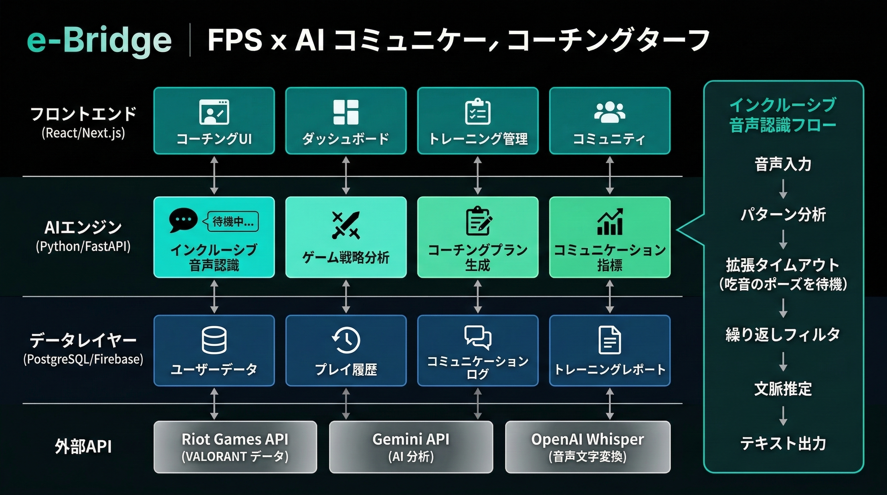

2026年度 未踏IT人材発掘・育成事業 応募情報入力フォーム 全回答一覧
FPS×AIで「伝える力」を育む コミュニケーション支援・研修プラットフォーム
| 時間 | 映像 | 内容・セリフ | ポイント |
|---|---|---|---|
| 0〜10秒 | 本人カメラ | 自己紹介 「渡辺柚気といいます。高校3年生で、eスポーツ部の部長をしています。」 |
カメラ目線で。落ち着いたトーンで入る |
| 10〜20秒 | 本人カメラ | 吃音の現実を正直に語る 「そして、吃音があります。電話が怖い日も、授業で当てられると固まる日も、ずっとありました。」 |
吃音が出ても絶対カットしない。それが証拠になる |
| 20〜35秒 | ゲーム画面に切替 （録画＋マイク同録） |
実際にプレイしながら声出ししている様子 「でも、VALORANTをやっていると——『敵、右！』『カバーして！』って、自然と声が出るんです。訓練じゃなくて、ゲームが、僕に話す勇気をくれた。」 |
「吃音で話せない人が、ゲーム中は自然に話せている」という対比が最大のインパクト。OBSやゲームバーで画面＋音声を同時録画する |
| 35〜45秒 | eBridge画面に切替 （操作画面録画） |
AIコーチング画面を映しながらナレーション 「e-Bridgeは、コミュニケーションが苦手な人がゲームをしながら『伝える力』を育てるプラットフォームです。」 |
完成度が低くても「動いている」ことを見せるだけで説得力が全然違う。実際に操作している様子でOK |
| 45〜60秒 | 本人カメラに戻る | 決意 「吃音があるからこそ、誰も気づかなかった解決策に気づけたと思っています。未踏で、それを証明します。」 |
カメラ目線。力強く、短く締める |

| 区分 | 市場定義 | 推定規模 |
|---|---|---|
| TAM（最大市場） | eスポーツ（200億）+ 企業研修（6,130億）+ HRTech（1,385億） | 約7,400億円 |
| SAM（到達可能市場） | コミュ困難eスポーツプレイヤー + ゲーミフィケーション研修需要 | 約264億円 |
| SOM（短期目標） | B2C: プレミアム1,000名 + B2B: 10社 | 3年後：約2.2億円/年 |
| カテゴリ | サービス | 特徴 | e-Bridgeとの差別化 |
|---|---|---|---|
| eスポーツコーチング | Metafy（$25M調達）/ Gamersensei（Corsair買収） | プロによる1on1。ゲームスキル特化。健常者向け。 | コミュ困難配慮なし・VC前提 → e-Bridgeは「安心設計AI」 |
| 音声認識 | Google STT / Whisper / Amazon Transcribe | 汎用高精度。流暢な発話前提。 | 吃音の「間」でタイムアウト → e-Bridgeはインクルーシブ音声認識 |
| 吃音支援 | Stamurai（50,000+ユーザー/180ヶ国）/ DAF Pro / SpeechEasy | 遅延聴覚フィードバック。「治す」アプローチ。 | eスポーツ/研修連携なし → e-Bridgeは「活かす」アプローチ |
| 企業研修 | 従来型（グループワーク等） | 対面が基本。効果測定が定性的。 | 若年層訴求力不足・AI計測なし → e-BridgeはFPS×AI計測 |
| HRTech | TUNAG / MotifyHR / カオナビ | エンゲージメント計測・タレント管理。 | コミュ訓練機能なし → e-Bridgeは実践型研修として補完的 |